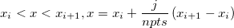

内容 |
解析：数学：XYZトレース補間
XYZデータに対してトレース/周期的な補間を実行
必要なOriginのバージョン: Origin 8.5 SR0以降
interpxyz iz:=Col(3) method:=linear npts:=50;
| 表示名 | 変数名 | I/O と データ型 |
デフォルト値 | 説明 |
|---|---|---|---|---|
| 入力 | iz |
入力 XYZRange |
<active> |
補間を行いたいXYZデータの範囲を指定します。 |
| 手法 | method |
入力 int |
<0> |
その手法は補間で使用します。 オプションリスト
|
| ポイント数 | npts |
入力 int |
<10> |
補間したデータセットのデータポイントの数を指定します。 |
| 出力 | oz |
出力 XYZRange |
<new> |
補間したデータの出力先を指定します。 シンタックスはここをご覧ください。 |
このXファンクションはXYZデータに対して補間を実行します。補間の手法には線形、3次スプライン、3次Bスプラインが含まれています。
一般に、2つの隣り合うデータポイント間で補間されると、最終的なデータセットのデータポイントの数は、ポイント数変数と同じになります。
詳細なアルゴリズムは下記のようになります。
異なる一連の三要素のデータ ( ,
,  ,
, ), i = 0, 1, ... n-1 が与えられると、n-1:
), i = 0, 1, ... n-1 が与えられると、n-1:

ここで、 j=1,2,3...(npts-1) です（npts はポイント数で指定した値）。
interp1, interp1xy, spline, bspline, interp1q, interp2, interp1trace